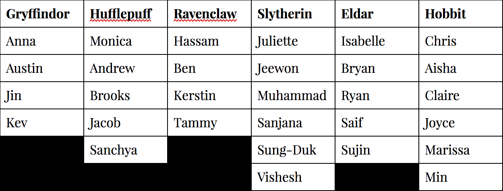

// the story
...what are we doing?

It has been a few weeks since Gayle’s arrival and the residents of Social Island have began to leave for expeditions. Some residents decided to explore the skies and are building an island somewhere in the unexplored atmosphere. A handful of residents are exploring the land of Penguins, Minecraft, Space, and virtual reality. However, a few residents have decided to stick around Social Island.
One day while everyone was up and roaming around the island, Gayle decided to go scuba diving and was unfortunately engulfed by the lagoon. (So, we think.) The same day, the SL 2.0 family decided to go find Gayle and invite her to dinner, except they found a sign indicating that all of the Social Island residents must return home immediately and enter a game to bring Gayle back from the afterlife.
The SL 2.0 team immediately reached out to all residents who are on their expeditions to return at once to Social Island to help save Gayle from the underworld!
Curabitur vitae rhoncus orci, quis posuere quam. Aliquam vel molestie odio. Nam nec vehicula nunc. Aenean auctor, tortor in eleifend porttitor, metus dui luctus turpis, nec commodo mi ante nec arcu. Curabitur vitae rhoncus orci, quis posuere quam. Aliquam vel molestie odio. Nam nec vehicula nunc. Aenean auctor, tortor in eleifend porttitor, metus dui luctus turpis, nec commodo mi ante nec arcu. Curabitur vitae rhoncus orci, quis posuere quam. Aliquam vel molestie odio. Nam nec vehicula nunc. Aenean auctor, tortor in eleifend porttitor, metus dui luctus turpis, nec commodo mi ante nec arcu. Curabitur vitae rhoncus orci, quis posuere quam. Aliquam vel molestie odio. Nam nec vehicula nunc. Aenean auctor, tortor in eleifend porttitor, metus dui luctus turpis, nec commodo mi ante nec arcu.
Curabitur vitae rhoncus orci, quis posuere quam. Aliquam vel molestie odio. Nam nec vehicula nunc. Aenean auctor, tortor in eleifend porttitor, metus dui luctus turpis, nec commodo mi ante nec arcu.
Curabitur vitae rhoncus orci, quis posuere quam. Aliquam vel molestie odio. Nam nec vehicula nunc. Aenean auctor, tortor in eleifend porttitor, metus dui luctus turpis, nec commodo mi ante nec arcu.
// the tasks
...what's our plan?
As a team, our objective is to modify the current INFO 466 island on Second Life. To do this, we have proposed to introduce our new changes within a Skybox as a way to minimize the loading times experienced due to all of the content everyone has already added to the island. Within our Skybox, we are introducing a new theme of Tim Burton as well to create a sense of the 'afterlife' that goes along with the topic of our story.
We will also be adding artificial intelligence to our island. More details will come later.
our task metrics
Our team's general collaboration workspace is where we keep track of each team member's weekly task and their current progress on completing it. Since our objectives change each week based on the current homework assignment, so each team member is assigned a weekly task. We split up the tasks among our team members according to their skills and set approriate deadlines to ensure that all necessary steps are taken to complete the needed objectives each week.
Check under weekly updates to view our current collaborative homework document. It includes all of the information we are working on for the week that will be submitted at the assignment's deadline.
team management
At the moment, the teams will consistent of their current collaborative team, but their team names will instead be the houses from Hogwarts and two sectors from Lord of the Rings. We ideally want all students in the class to be able to participate in our scavenger hunt.

correcting teams
For time’s sake, we will give some hints for the last two minutes of each task to help them attempt to complete the current task they are working on. If a team fails at a particular task, we can either teleport them or take them out of the competition. However, this decision is still to be determined.

task one
find the portal
Time to complete: 5 minutes.
Each team can take a look at the sign, located by the town center near the lagoon, that was left behind by an anonymous figure about Gayle’s disappearance. Then, every team must find the portal that is located somewhere around the Social Island to teleport to the outside of the alternate world.
Any team member from their team who finds the portal must either shout their team name in chat that they found the portal or voice it over in Sococo.
Reward: the first team who finds the portal will get a small clue for the second task.
task two
teleport to the alternate world
Time to complete: 5 minutes.
Each team must solve how to enter the alternate world after being teleported to right outside of the alternate realm as an avatar cannot simply enter the realm as usual. Once each team has a solution, they must choose a member to successfully perform the solution to enter the afterlife.
Any team member from their team who enters the realm must either shout their team name in chat that they got into the alternate world or voice it over in Sococo.
Reward: the first team who finds the solution will get a small clue for the last task.

task three
find the three horcruxes
Time to complete: 10 minutes.
Each team must work together and find the three different horcruxes that are hidden around the alternate realm in the structures that we have built. Keep in mind, each one of these horcruxes aren't an easy find! Think of every possible hiding place you can think of and look there! Who knows, there's a rumor
a dragon may be able to provide you with some hints.
After finding the three horcruxes, the team must find the Dragon AI and the alternate world Goddess to submit their horcruxes.
Reward: the first team to submit all three horcruxes gets 10 extra class points.